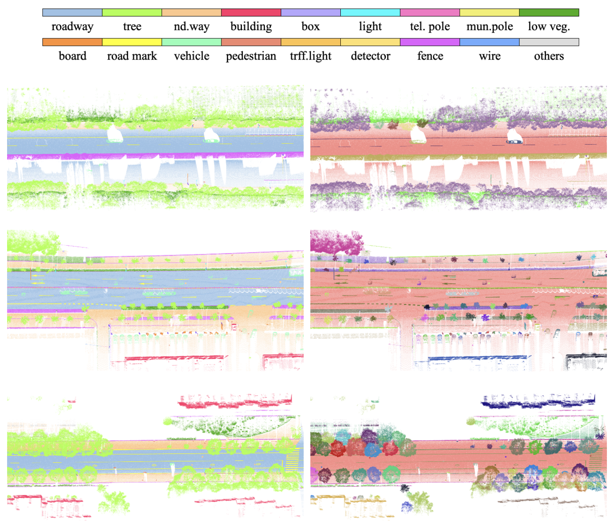

Research Projects
- 国家重点研发计划青年科学家项目，融合多源对地观测数据的城市植被碳储量时空建模关键技术与核心软件，2024.01-2026.12，主持。
- 华为黎曼实验室开放基金项目，大模型知识引导的场景级多模态空间数据统一表征构建，2024.01-2025.01，主持。
- 南方电网电力科技股份有限公司合作项目，高精度高可靠点云配准算法开发，2023.03-2023.12，主持。
- 湖北珞珈实验室开放基金项目，融合多模态空间数据的室内外一体化三维重建，2023.01-2024.12，主持。
- 国家自然科学基金面上项目，面向数字孪生道路的场景理解与三维基底构建，2022.01-2025.12，主持。
- 滴滴盖亚青年学者基金项目，基于transformer的图像匹配与相机位姿估计，2022.01-2022.12，主持。
- 国家自然科学基金青年项目，基于车载点云和影像的高清地图道路要素结构化提取，2020.01-2022.12，主持。
- 自然资源部城市国土资源监测与仿真重点实验室开放基金资助课题，空地多平台数据协同的城市空间实体层次化建模方法，2020.01-2021.12，主持。
- 中国博士后创新人才支持计划，面向高精驾驶地图道路要素提取的多平台点云协同处理理论方法，2019.01-2020.12，主持。
Benchmark Dataset

WHU-Urban3D An Urban scene LiDAR Point Cloud Dataset for Semantic Instance Segmentatio
Xu Han*，Chong Liu*, Yuzhou Zhou, Kai Tan, Zhen Dong†, Bisheng Yang
ISPRS J (IF: 12.7)
[Paper]
[Dataset]
Registration of large-scale terrestrial laser scanner point clouds: A review and benchmark
Zhen Dong, Fuxun Liang, Bisheng Yang†, Yusheng Xu, Yufu Zang, Jianping Li, Yuan Wang, Wenxia Dai, Hongchao Fan†, Juha Hyyppä, Uwe Stilla
ISPRS J (IF: 11.774, ESI highly cited)
[Paper]
[Dataset]
Industry Applications
If you are interested in cooperation - contact us on sales@dynspai.com.
- 高精度DEM重建(High-quality DEM reconstruction)
- 车载点云位置精度改正(MLS point clouds position correction)
- 道路设施交互式提取(Interactive extraction of road facilities)
- 点云图像联合测图(Joint mapping with point clouds and images)
- 道路场景三维模型重建(3D reconstruction of road scene)